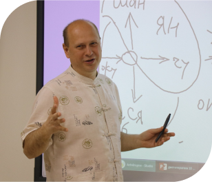
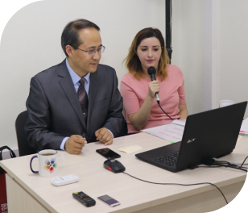

О компании
Компания «СИНОФАРМ» на протяжении 9 лет успешно занимается развитием и продвижением
Традиционной Китайской Медицины на российский рынок. Нашей уникальной разработкой
является программный продукт «ТКМ Эксперт».
Наша компания в цифрах
-
2000различных товаров Вы можете найти в нашем магазине
-
120фитопрепаратов лучшего качества представлены в каталоге
-
23выпущенные книги по Традиционной Китайской медицине
-
10 летопыт врачей в нашем медицинском центре
-
14 летразвиваем и продвигаем Традиционную Китайскую Медицину
-
1000слушателей посетили наши мероприятия